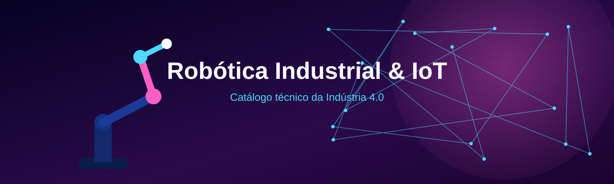

Catálogo técnico e educativo sobre os principais modelos de robôs usados na Indústria 4.0 e sobre os sensores que conectam máquinas, processos e sistemas de controle à internet.
A Internet das Coisas é o conjunto de objetos físicos - máquinas, sensores, atuadores e equipamentos - equipados com eletrônica embarcada e conectividade de rede, capazes de coletar, trocar e processar dados sem que uma pessoa precise intervir diretamente em cada leitura. No ambiente industrial, essa ideia recebe o nome de IIoT (Industrial Internet of Things) e é um dos pilares da Indústria 4.0, permitindo que chãos de fábrica inteiros sejam monitorados e ajustados em tempo real.
Robótica Industrial é a área da engenharia que projeta, constrói e programa manipuladores mecânicos capazes de executar tarefas repetitivas, precisas ou perigosas dentro de um processo produtivo - soldagem, pintura, montagem, paletização, inspeção, entre outras. Cada robô possui uma cinemática própria (a forma como seus eixos se movem), o que dá origem aos diferentes modelos apresentados neste catálogo: Cartesiano, SCARA, Articulado, Cilíndrico, Delta, Polar e Colaborativo.
Automatizar um processo significa reduzir a dependência de intervenção humana direta para que ele funcione com qualidade constante. Isso traz ganhos de produtividade, redução de erros e de desperdício, maior segurança para os trabalhadores em tarefas de risco e a possibilidade de operar em ritmo contínuo, 24 horas por dia. A automação é o que torna viável a produção em larga escala mantendo padrão de qualidade em cada peça fabricada.
Um robô industrial moderno raramente trabalha sozinho: ele recebe dados de sensores de proximidade, visão, força e temperatura, e envia seu próprio status (posição, corrente do motor, ciclos executados) para redes industriais usando protocolos como MQTT, OPC UA, Profinet e Ethernet Industrial. É essa troca constante de dados entre robôs, sensores e sistemas supervisórios que caracteriza a fábrica conectada da Indústria 4.0, permitindo manutenção preditiva, controle remoto e tomada de decisão baseada em dados reais do chão de fábrica.

Conheça os 7 principais modelos de robôs usados na indústria: características, funcionamento, aplicações e integração com IoT.

Catálogo com mais de 20 sensores para Arduino, ESP32, Raspberry Pi e CLP, com exemplos de programação.
Entenda o contexto acadêmico deste catálogo, desenvolvido para a unidade curricular de Internet das Coisas.